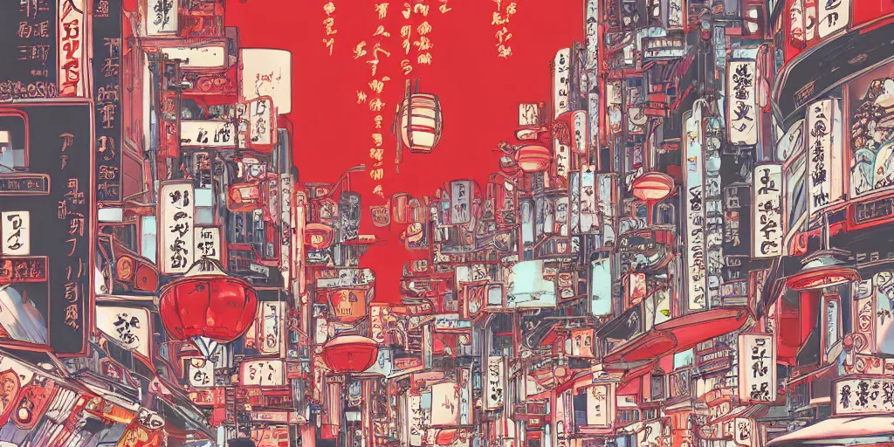
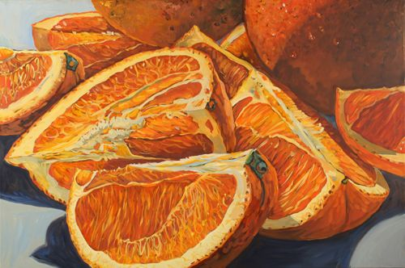
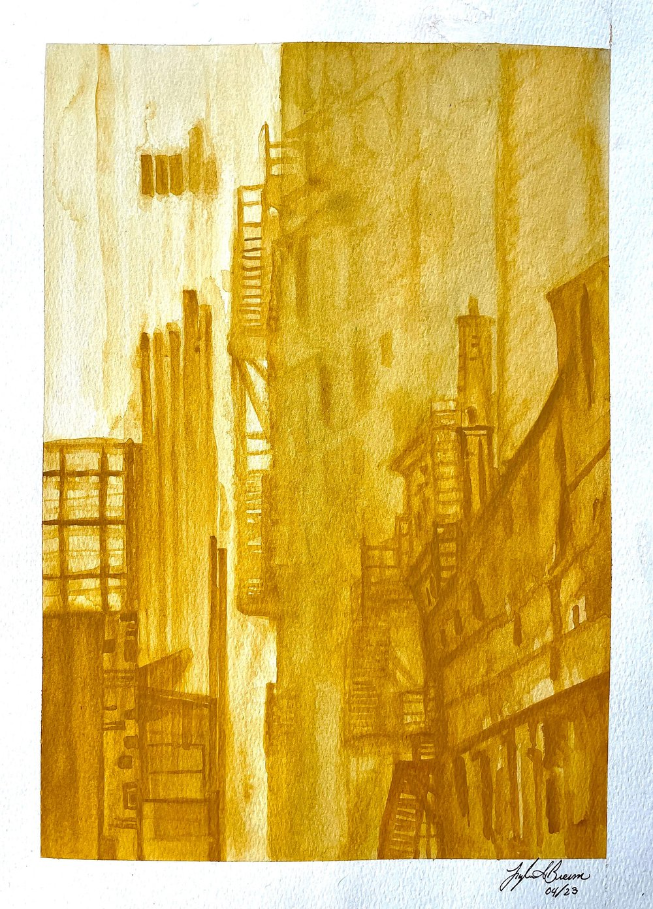
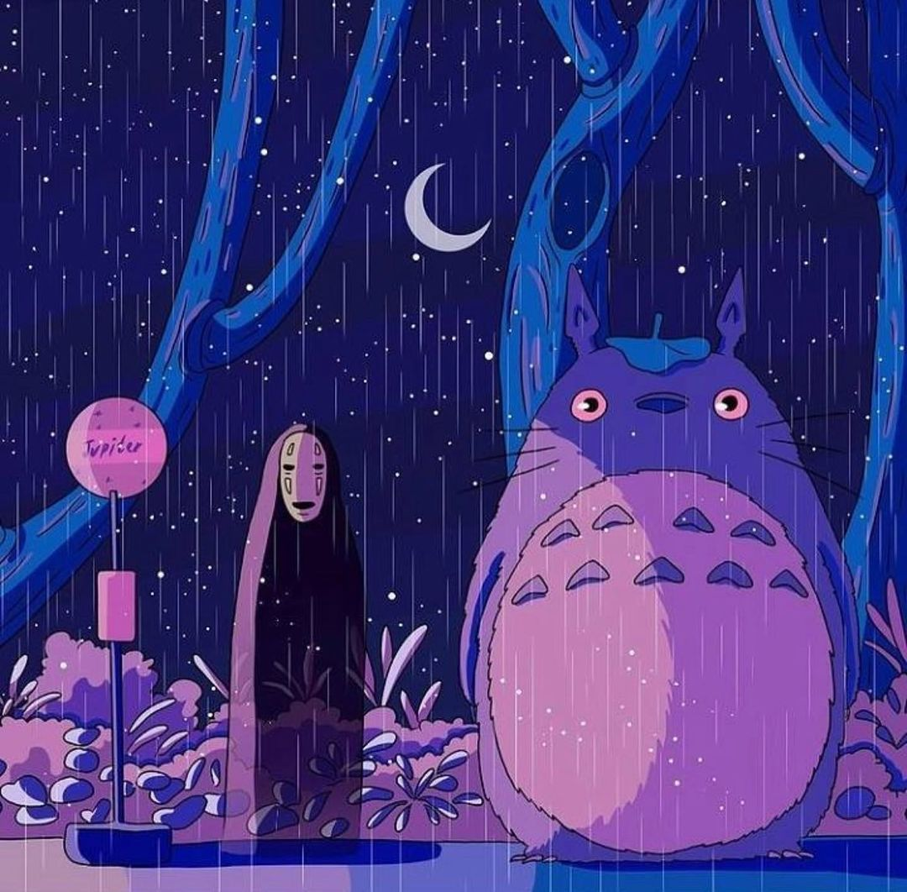

What is your favorite color in the rainbow? (minus violet and ingigo)(plus pink)
Question 1: Do you like warmer or cooler toned colors? (yes i did mean to say that)
Question 2: How many people like this color?
Question 3: Is this color the color of nature?
PSA: I mean in terms of paint
Question 4: Could you use red to make this color?
Question 5: Could you use blue to make this color?
Question 6: If a baby was wearing this color what gender would you think it was?
Question 7: Does a common animal come to mind when you think of this color?
Your favorite color is red (put emoji)

Your favorite color is orange

Your favorite color is yellow

Your favorite color is green
Your favorite color is blue
Your favorite color is purple

Your favorite color is pink